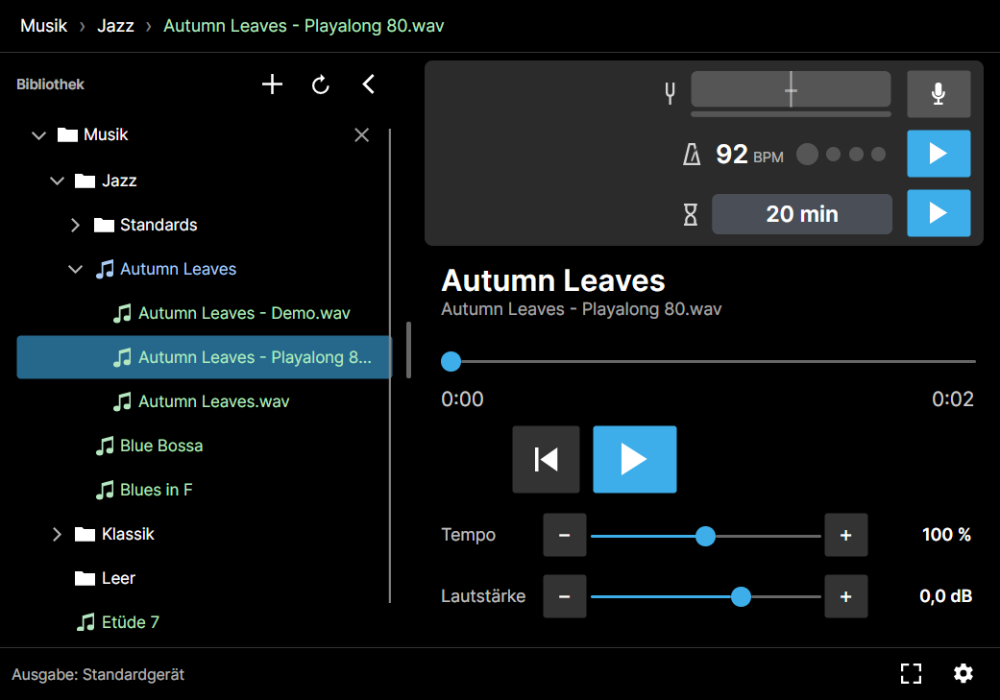

Üben mit deinen eigenen Aufnahmen
Eine kostenlose Desktop-App für Musikerinnen und Musiker: Musikordner öffnen, ein Stück langsamer oder schneller abspielen, ohne dass sich die Tonhöhe ändert, mit dem Metronom im Takt bleiben, das Instrument stimmen und die Übezeit im Blick behalten. Funktioniert offline, ohne Konto und ohne Werbung.
Version {{version}} für 64-Bit-PCs (x64) · So installierst du sie · Alle Versionen und Prüfsummen

Was die App kann
Deine Musikordner
Wähle einen oder mehrere Ordner und klappe sie direkt in der Bibliothek auf. Dateien, die zusammengehören, etwa Demo und Playalong desselben Songs, erscheinen als ein Stück. Die Bibliothek öffnet sich so, wie du sie verlassen hast, mit der zuletzt geladenen Datei.
Player
- MP3, WAV, FLAC und OGG
- Tempo von 50 % bis 150 %, die Tonhöhe bleibt gleich
- Lautstärke und ein Fortschrittsbalken, mit dem du an jede Stelle springst
- Tempo und Lautstärke merkt sich die App pro Datei
Metronom
- 30 bis 250 BPM
- 1 bis 16 Schläge pro Takt, der erste betont
- Tempo-Voreinstellungen 60, 90 und 120
- Zeigt den aktuellen Schlag an
- Eigene Lautstärke, unabhängig vom Player
Stimmgerät
- Chromatisch: Ein Balken zeigt, ob du zu hoch oder zu tief bist, grün, wenn der Ton sauber ist
- Stimmung C, B, E♭, F und A, Kammerton 415 bis 466 Hz
- Ein schmaler Balken zeigt den Pegel
- Das Mikrofon ist nur offen, solange das Stimmgerät eingeschaltet ist
Übetimer
- 1 bis 60 Minuten, Voreinstellungen von 5 bis 30
- Leert sich stufenlos wie eine Sanduhr, in ruhigen Farben
- Macht nie ein Geräusch
- Lässt sich verlängern oder verkürzen, während er läuft
Fürs Üben gemacht
- Große Knöpfe und Schrift, per Touch bedienbar und vom Notenständer aus lesbar
- Vollbild (F11); der Bildschirm bleibt beim Üben an
- Tastenkürzel für Player, Metronom, Timer und Stimmgerät
- Deutsch und Englisch
- Sucht nur nach Updates, wenn du es willst
Kostenlos und Open Source
just practise ist kostenlos und bleibt es: keine Kosten, keine Werbung, kein Konto und kein Tracking. Der Quellcode liegt unter der MIT-Lizenz auf GitHub. Du hast einen Fehler gefunden oder vermisst etwas? Schreib ein Issue, gern auch auf Deutsch.